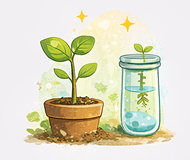
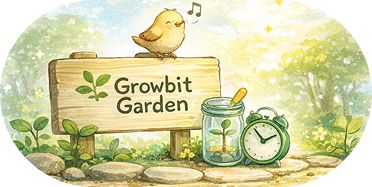

【記録できる】
毎日の勉強内容や取り組みをシンプルに残し、 自分のペースで続けられます。
Growbit Gardenは、毎日の勉強や習慣を記録しながら、 少しずつ積み重なる成長を見える形にするサービスです。 続けた分だけ変化が感じられるから、学ぶことがもっと自然に習慣になります。
無料で始める
勉強や習慣を記録して、楽しく継続できるサービスです。
毎日の勉強内容や取り組みをシンプルに残し、 自分のペースで続けられます。

積み重ねた記録が変化として見えるので、 努力の実感につながります。
やさしい見た目とわかりやすい導線で、 毎日の学習習慣を無理なく支えます。


